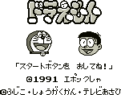
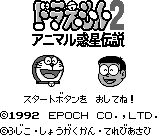

Doraemon - Gameboy Games

- Company: Epoch
- Genre: Platform game
Controls
- A button: Punch
- B button: Jump
- Start: Pause
- Select: Raise/Lower Map
You start on in a Zelda-like playing field. You collect items and punch out any enemies that
get in your way. You come across doors that can take you into either a horizontal or vertical
scrolling mini-game.

Anime Video Game Resource Center © 1998 by Luis A. Cruz